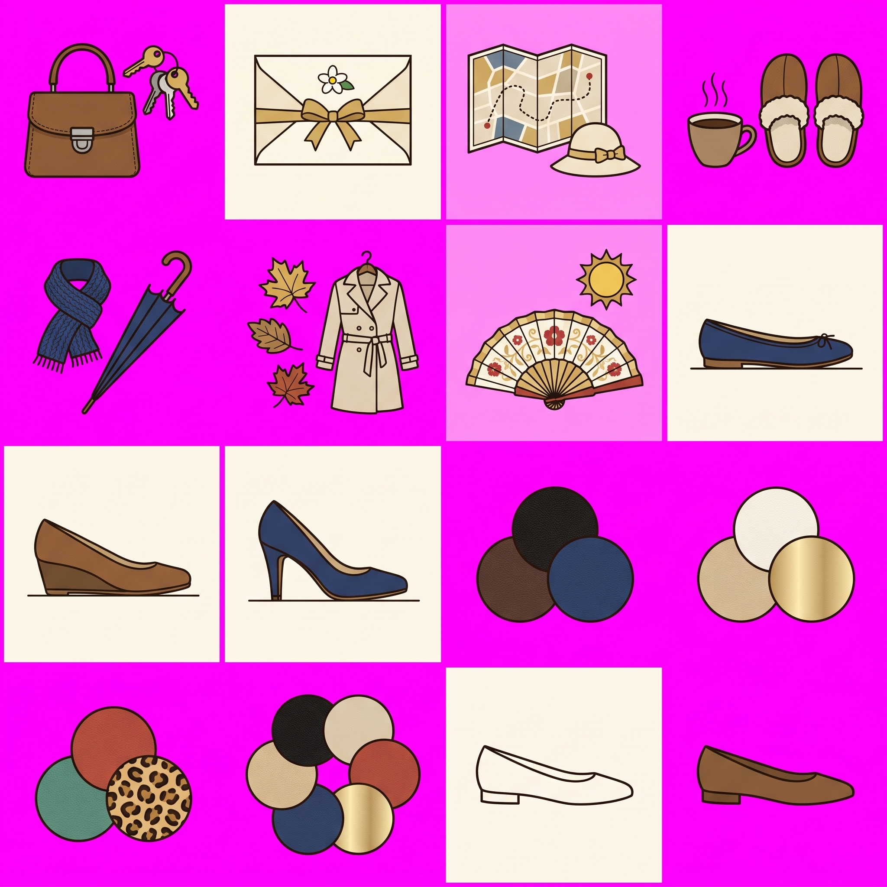

1 Clean-line mid-century Spanish commercial poster illustration (generic 1950s-60s shop advertising look, not imitating any specific artist): thin dark ink outlines (#2B2118), flat colour areas with minimal soft shading, subtle printed paper grain over the whole image, warm and elegant, respectful. Palette: leather brown #816040, cream #F1E6B2, gold #CEB888, navy #2E4674, warm off-white #FBF7EA, ink #2B2118, small accents of muted red #B5553C.
Same illustration style, line quality and palette as the attached reference image.
ICON SHEET: a 4 columns x 4 rows grid of 16 equal square cells on a perfectly flat, uniform pure chroma magenta background (#FF00FF) everywhere, no grid lines, no borders, no shadows on the background. Each cell contains ONE simple, bold, highly legible spot illustration, centred, same visual size in every cell, with generous empty magenta margin so it never touches the cell edges. Readable at 64 px: few details, clear silhouettes, thin ink outlines, flat colours. Do NOT use any pink, magenta or purple colour in the icons.
Row 1 (occasions): 1 a small brown leather handbag with a bunch of keys; 2 an elegant cream wedding invitation envelope with a gold ribbon bow and a small flower; 3 a folded city walking map with a dotted route and a small cream sun hat; 4 a steaming coffee cup next to a pair of cosy house slippers.
Row 2: 5 weather cold: a warm navy scarf and a closed umbrella; 6 weather mid-season: a few autumn leaves and a light trench coat on a hanger; 7 weather hot: an open Spanish hand fan and a small sun; 8 a side view of a flat ballet shoe (heel height: flat), drawn on a thin ground line.
Row 3: 9 side view of a low wedge shoe (small heel, about 3 cm), on a thin ground line; 10 side view of an elegant court shoe with a medium-high heel (about 7 cm), on a thin ground line; 11 colour swatches DARK: three overlapping round leather swatches in black, dark brown and navy; 12 colour swatches LIGHT: three overlapping round leather swatches in beige, off-white and soft gold metallic.
Row 4: 13 colour swatches COLOURFUL: three overlapping round leather swatches in red, teal green and leopard print; 14 colour swatches ALL: five overlapping round leather swatches mixing black, beige, red, navy and gold; 15 a small simple women shoe icon, outline only (ink outline, no fill), side view; 16 the same small women shoe icon, filled with leather brown #816040.
No text, no numbers, no letters, no labels anywhere.

2 Clean-line mid-century Spanish commercial poster illustration (generic 1950s-60s shop advertising look, not imitating any specific artist): thin dark ink outlines (#2B2118), flat colour areas with minimal soft shading, subtle printed paper grain over the whole image, warm and elegant, respectful. Palette: leather brown #816040, cream #F1E6B2, gold #CEB888, navy #2E4674, warm off-white #FBF7EA, ink #2B2118, small accents of muted red #B5553C.
Same illustration style, line quality and palette as the attached reference image.
ICON SHEET: a 4 columns x 4 rows grid of 16 equal square cells on a perfectly flat, uniform pure chroma magenta background (#FF00FF) everywhere, no grid lines, no borders, no shadows on the background. Each cell contains ONE simple, bold, highly legible spot illustration, centred, same visual size in every cell, with generous empty magenta margin so it never touches the cell edges. Readable at 64 px: few details, clear silhouettes, thin ink outlines, flat colours. Do NOT use any pink, magenta or purple colour in the icons.
Row 1 (occasions): 1 a small brown leather handbag with a bunch of keys; 2 an elegant cream wedding invitation envelope with a gold ribbon bow and a small flower; 3 a folded city walking map with a dotted route and a small cream sun hat; 4 a steaming coffee cup next to a pair of cosy house slippers.
Row 2: 5 weather cold: a warm navy scarf and a closed umbrella; 6 weather mid-season: a few autumn leaves and a light trench coat on a hanger; 7 weather hot: an open Spanish hand fan and a small sun; 8 a side view of a flat ballet shoe (heel height: flat), drawn on a thin ground line.
Row 3: 9 side view of a low wedge shoe (small heel, about 3 cm), on a thin ground line; 10 side view of an elegant court shoe with a medium-high heel (about 7 cm), on a thin ground line; 11 colour swatches DARK: three overlapping round leather swatches in black, dark brown and navy; 12 colour swatches LIGHT: three overlapping round leather swatches in beige, off-white and soft gold metallic.
Row 4: 13 colour swatches COLOURFUL: three overlapping round leather swatches in red, teal green and leopard print; 14 colour swatches ALL: five overlapping round leather swatches mixing black, beige, red, navy and gold; 15 a small simple women shoe icon, outline only (ink outline, no fill), side view; 16 the same small women shoe icon, filled with leather brown #816040.
No text, no numbers, no letters, no labels anywhere.